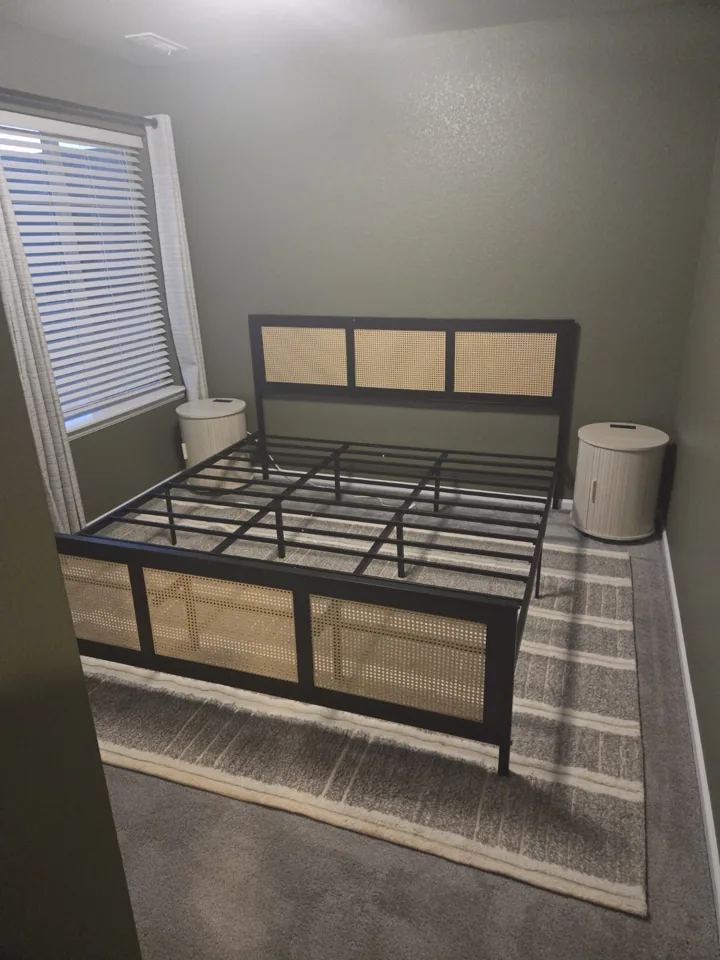

Furniture assembly in Lone Tree and South Denver
Turn boxed furniture into a finished room. Wagner Home Services assembles furniture and storage pieces in your home, with an estimate based on the items and the work involved.

Furniture we assemble
Beds and bed frames, dressers, desks, entertainment centers, cabinets, patio furniture and storage systems are part of our assembly work. Our project gallery includes bedroom furniture and an IKEA BILLY bookcase wall fitted along a vaulted ceiling.
Send the product link before booking
Share the product link or model number, the quantity of each item, and photos of the room. Let us know whether the boxes are already in the room, whether stairs are involved, and whether wall anchoring or removal of old furniture is part of the request. Those details help us estimate the full job.
Assembly, placement and additional work
Tell us where each piece should go and whether you want to discuss anchoring, trim or other finishing work. A freestanding bookcase assembly and a fitted bookcase wall have different scopes. Packaging removal, old furniture hauling and custom fitting should be included in your request so they can be priced and scheduled.
Planning your assembly appointment
Keep the hardware, instructions and all boxes together until assembly is complete. Clear enough floor space to lay out the parts. If a delivery is delayed, or a piece arrives damaged, let us know before the appointment so we can review the plan.
Serving Lone Tree and the South Denver metro
Request service in Lone Tree, Highlands Ranch, Centennial, Parker, Castle Rock or Littleton. For other locations, share your address or ZIP code so travel and availability can be reviewed.
Common questions
Can you assemble IKEA bookcases?
Yes. Our completed projects include an IKEA BILLY bookcase wall. Send the models, quantities and any trim or anchoring requirements for an estimate.
Can I book several pieces together?
Yes. Include each product link and quantity in one request so the estimate covers the complete list.
Is junk removal included?
Include packaging or old furniture removal in your request. Assembly and hauling needs are reviewed together before scheduling.
More home services
Request a free estimate
Send your project details, location and photos. An estimate request is reviewed before an appointment is confirmed.